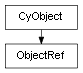

class cymel.core.cyobjects.objectref.ObjectRef¶

- class cymel.core.cyobjects.objectref.ObjectRef(src)¶
ベースクラス:
CyObjectCyObjectの参照が切れていても再取得が可能な弱参照ラッパー。これ自身も
CyObjectであるため、参照先を得ずとも、 基底でサポートする範囲でオリジナルのようにも振る舞える。Methods:
内部データを返す。
newObject(data)内部データとともにインスタンスを生成する。
node()ノードを得る。
object()弱参照が切れていなければオブジェクトを得る。
refclass()ラップしているオブジェクトのクラスを得る。
refdata()ラップしているオブジェクトの内部データを得る。
weakref()弱参照を得る。
Attributes:
Methods Details:
- internalData()¶
内部データを返す。
派生クラスで内部データを拡張する場合にオーバーライドする。 その場合、
newObjectクラスメソッドもオーバーライドし、 拡張に対応させる。内部データはブラックボックスであるものとし、 拡張データでは基底のデータも内包させる必要がある。
- classmethod newObject(data)¶
内部データとともにインスタンスを生成する。
内部データはブラックボックスであるものとし、 本メソッドをオーバーライドする場合も、 基底メソッドを呼び出して処理を完遂させなければならない。
内部データを拡張する場合は
internalDataも オーバーライドすること。- パラメータ:
cls (
type) -- 生成するインスタンスのクラス。data -- インスタンスにセットする内部データ。
- 戻り値の型:
指定クラス
- refclass()¶
ラップしているオブジェクトのクラスを得る。
- refdata()¶
ラップしているオブジェクトの内部データを得る。
- weakref()¶
弱参照を得る。
- 戻り値の型: